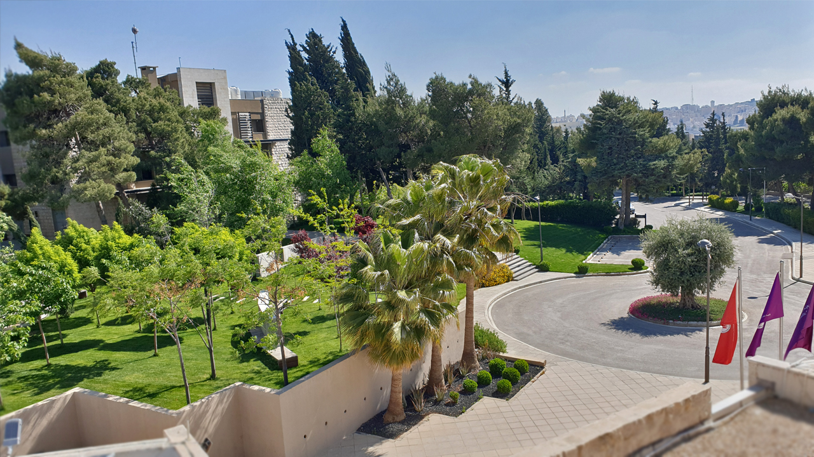

A university.
A world of possibility.
Princess Sumaya University for Technology brings computing, engineering and business together in Amman, Jordan.

Rooted in science.
Looking forward.
Founded in 1991 as the academic arm of the Royal Scientific Society, PSUT began with a single Computer Science degree. It adopted its current name in 2002.
Today, its academic community spans computing sciences, engineering, business technology and graduate research.
Read the official university overview ↗Ideas become
possibilities.
Study connects technical knowledge with practical questions. PSUT’s academic fields include software, artificial intelligence, cyber security, engineering and business.
Research, entrepreneurship and international academic partnerships broaden the university experience.
Life beyond
the classroom.
Student clubs, campus activities and entrepreneurship initiatives create opportunities to explore interests and exchange ideas.
This internship portal supports the next step: discovering opportunities and following the journey into professional experience.
Explore internships ↗